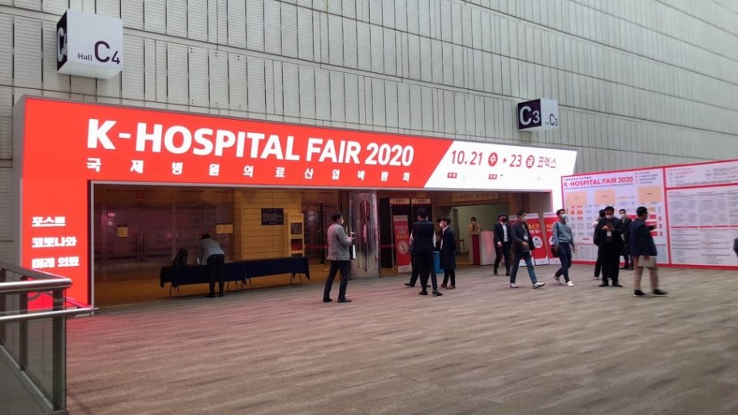
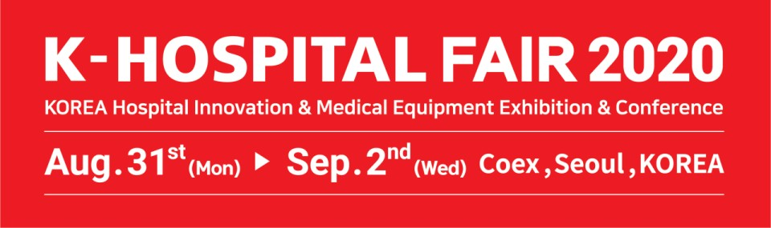
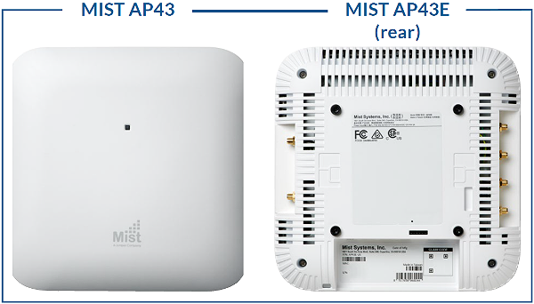
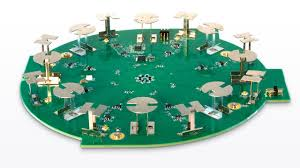
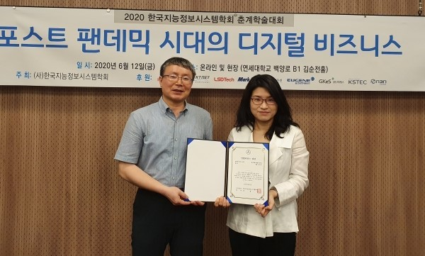

첫 한국형 AI정밀의료 서비스 '닥터엔서'
의료진에게는 더 안전하고 정확한 진료를 제공하고, 환자와 보호자 등 국민이 체감혜택을 누릴 수 있음. 개인별 맞춤 진단•치료로 의료비 절감 및 의료시스템의 효율성을 높인다.
'닥터엔서'는 의료 빅데이터를 통해 의사의 진단•치료를 지원해주는 AI솔루션으로, 의료데이터(진단정보, 의료영상, 유전체정보, 생활패턴 등)를 연계•분석하여 개인 특성에 맞춰 질병 예측•진단•치료를 지원해주는 서비스로, 8대질환 대상 21개 소프트웨어 개발 중이다.
인공지능(AI) 기반의 진단•예측•치료 등을 지원하는 정밀의료 서비스 '닥터엔서'는 여러 병원과 ICT•SW기업들이 함께 개발 및 서비스를 하고 있다. 심혈관 질환은 서울아산병원과 코어라인 소프트가 관상동맥 석회화에대한 자동진단을 서비스한다. 뇌혈관 질환에 대해서 경북대학교병원과 (주)제이엘케이에서 뇌동맥류병변진단과 뇌출혈진단을 서비스한다. 대장암은 가천대학교 길병원과 주식회사 피씨티에서 서비스하며 내시경 영상으로 기반으로 대장용종/암진단과 대장암 발생위험도를 예측한다. 전립선암은 서울성모병원과 라이프시맨틱스와 (주)뷰노에서 함께 서비스하며 선립선암 병기/재발예측과 전립선암 영상기반 진단을 지원한다.
주니퍼 네트웍스의 미스트 솔루션은 미스트의 AI기반 무선랜(WLAN) 플랫폼을통해 더욱 안정적이고 예측가능한 Wi-Fi 환경을 제공한다. 네트워킹 업계의 유일한 AI 가상 어시스턴트인 마비스(Marvis)를 통해 무선 문제 해결 방법을 간소화 하고, 클라이언트와 네트워크의 작업 상황에 대한 탁월한 인사이트를 제공한다. 아울러 미스트는 특허받은 가상 비콘 기술을 Wi-Fi와 IoT에 접목해 확장가능하고, 경제적인 방식으로 실내 경로안내, 프록시미티(Proximity) 알림, 트래픽 분석, 자산 추적 등 위치기반 무선 서비스를 제공하는데 사용할 수 있다.


코로나 팬데믹 사태 이후 문화에 대한 패러다임은 언택트 문화이며 구독경제, 비대면 교통수단(스마트 모빌리티, 자전거 등), 디지털 헬스텔러, 에코라이프의 촉진, 안전한 및 질높은 배달음식에 대한 수요, 전기차 및 자율주행자동차에 대한 수요 증가, 사물인터넷•5G 등 IT기술의 발전과 빠른 적용 및 활용, 홈 헬스 문화 등이 있다.
일하는 방식에 대한 패러다임은 재택근무의 활성화, 원격회의 및 원격모임, 디지털 쇼핑, 산업자동화, AI•클라우드•빅데이터가 발전하고 활용됨 등이 있다.
현재 코로나 위기는 경제적으로 많은 전문가들이 서브프라임 보기지 사태와 같거나 혹은 그 이상으로 보고 있다. 기업들은 과거에는 CEO와 몇몇 고위층들의 직감에 의해서 R&D가 이루어졌다면 현재는 데이터와 여러 과학적 근거를 통해서 의사를 결정하는 기술들이 개발되었다. 비대면 온라인과 여러 기술들의 활용은 과거에 사람이 만나서 해야하는 일을 비대면과 더욱 낮은 가격으로 같은 서비스를 제공받을 수 있게 되었다.
포스트 팬데믹의 가장 큰 이슈는 '4차 산업혁명 가속화'이다. 4차산업혁명의 기업들의 동향은 기존의 단순 노동력을 활용하던 생산이 타격을 입자 이를 대체할 AI를 활용한 스마트 팩토리 구축에 나서고 있다. 미국의 경우는 최근 2만 4,000여개의 코로나19 연구 데이터를 정리한 'COVID-19 Open Reserch'를 구축해 각 제약회사 의료계에 코로나 19에 대한 정보를 제공해 진단키트, 백신 개발을 가속화가고 있다. SK텔레콤은 빅데이터 기반의 실시간 유동인구 분석서비스로 확진자 동선을 예측해 방역 지원에 나섰다. KT는 과학기술정보통신부와 함께 AI•빅데이터로 코로나19 확산 예측 모델을 개발하고 있다.